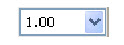

Wafer Defect Management Wafer Map Window
To access: In the Wafer Defect Management window, select View > Wafer Map.
The Wafer Defect Management wafer map provides another graphical view of all the wafer defects.
Description
Wafer defects are mapped on the Wafer Map window with the actual coordinates present in the inspection file. The complete wafer data is presented as an unfolded wafer. Absolute coordinates are calculated using the wafer die index and die pitch mentioned in the inspection report.
You can navigate over the defects in the wafer map. Unlike the Defect Map, no operations are supported on the Wafer Map except for navigation. The Wafer Map helps you get a complete view of the wafer defects.
Objects
Control |
Description |
|---|---|
 |
Wafer defects are shown as a filled blue diamond. Tool tips on a mask defect contains the coordinates (with regards to wafer sample coordinates) of the defect in the units configured in the dat-ini.xml file, the defect number (ID), the inspection type (Inspection Type), and the classification type. |
Zoom Controls |
View any desired section or part of the Wafer Map using the zoom controls. See “Additional Zoom Controls” for information on additional zoom controls that are not on the tool bar. |
Zoom in. |
|
Zoom out. |
|
Fit to window. The default zoom factor is 1.00. |
|
 |
Set zoom factor. The current zoom factor is always displayed. You enter an exact value in this field or select from existing zoom factors in the dropdown list. The minimum zoom value that can be entered is 1.00. |
Set color dies in the Wafer Map according to options available under this combo box. The coloring shows various information in the wafer. For example, a die can show DC Fail status for each of the dies. Currently, coloring is enabled for DC Fail statuses only. Refer to “Wafer Map Coloring” for information. |
|
|
View the die colors according to the parameters of wafer file. The colors used depend on the attribute value from IR. This is enabled when Color Dies is selected. |
Shows the percentage of Fail dies, calculated as (Fail Dies x 100) / Total Dies. This is displayed when Color Dies is selected. |